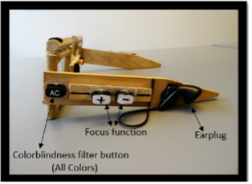

Products:
Visual Blue 1.0


The glasses are constructed to contain a various assortment of different technologies. These technologies work cohesively to create a piece of eyewear with immense accessibility.
Eye-tracking

Eye-tracking is the technology that, with the help of a surface, will be able to follow eye movements. On the surface, infrared light rays are used, which give reflections in the eye, and further calculate data from the user's eye movements. A lot of the already working mechanics on the market and the one we use can fire an infrared light instead of a visible light at your eyes. The light is shown in a specific pattern which lands on your eye making it easier for the infra-red cameras built into the tracker to keep tabs on changes and how the light is being reflected. Many times, per second the camera will take infra-red snapshots of the patterns on your eyes and process these images to determine where you’re looking.
TThis can provide information about what the user is focusing on (Tobii Tech, 2021). The Eye-tracking technology becomes one of the basic elements of the glasses and assists other functions, such as the camera functions. (Tobii Tech, u.d.),
Camera functions and focus:
The camera is located on the front of the glasses. This helps the user to take pictures of everyday situations, and together with eye-tracking provides good user experiences. What the user is looking at, the camera will also emphasize.
On the left side of the glasses, there is a focus function that acts as progressive glass. It is an autofocus camera that operates by analyzing an image and once it has been projected onto one or more sensor it adjusts the focus based on the qualities help it to determine subject distance or clarity. There is also a zoom slider on the left side of the glasses that is used to digitally zoom on objects. This is good for those with myopia, as progressive glass corrects vision at multiple distances simultaneously. The focus function can therefore be used as a camera or binoculars, to focus on selected areas. There is also a camera button on top of the glasses, which makes it easier to take good pictures and to improve usability.